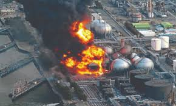
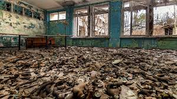
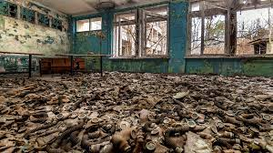

Welcome
This project visualizes radioactive plume dispersion for major nuclear accidents using the Gaussian Plume Model. Explore case studies, interactive heatmaps, timelines and image galleries.
The two featured disasters are Chernobyl (1986) and Fukushima Daiichi (2011). Each page includes background, causes, long-term impacts, image galleries and an interactive plume visualization.

Chernobyl (1986)
Worst nuclear accident in history — reactor explosion and long-term contamination.
View Case Study

Fukushima (2011)
Earthquake-triggered meltdowns and decades-long decommissioning efforts.
View Case StudyGallery Preview

 
